왜 만들었고, 데이터는 어디서 오나요
발표자는 아버지 회사에서 돈 관리를 맡으면서, 규모가 작은 회사일수록 돈의 흐름을 파악하기가 어렵다는 걸 겪었어요. 들어와야 할 돈을 다 받았는지조차 직원에게 물어봐야 알 수 있었거든요. 그래서 두 가지를 만들었어요.
- 대표가 보는 대시보드 — 돈이 어떻게 흐르는지, 못 받은 돈은 없는지 보고, 세금계산서 발행까지 한곳에서 해요.
- 경리 실무 자동화 — 매일 손으로 하던 위하고 전표 작업을 버튼 하나로 줄여요. 최소 30분~1시간 걸리던 일이 1분 정도로 줄었다고 해요.
미리보기에서 먼저 보여 준 건 세금계산서 발행이에요. 아래 확인 창에는 받는 곳(세원기계), 작성일, 품목, 공급가액 1,356만 원, 세액 135만 6천 원, 합계 1,491만 6천 원이 채워져 있어요. '국세청 전송' 버튼을 누르면 5초 만에 끝난다고 해요.
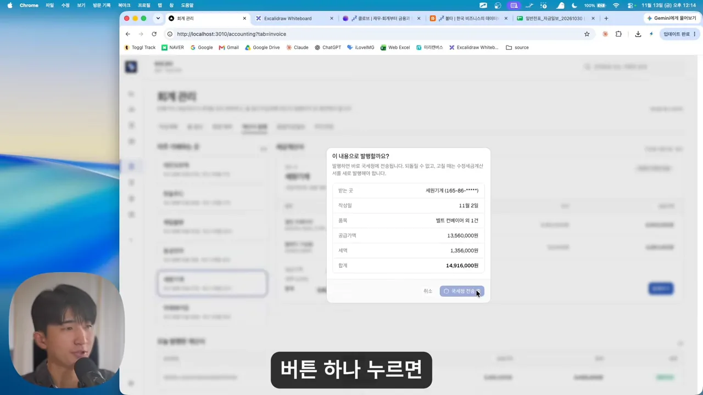
데이터부터 연결해요
무엇을 보여 주든 먼저 돈 관련 데이터가 있어야 해요. 예전에는 은행과 카드사를 하나하나 연동해야 했지만, 요즘은 연동을 대신해 주는 서비스가 나와 있어요. 첫 번째로 소개한 건 클로브AI예요. 화면 문구 그대로 흩어진 계좌와 카드를 연결해서 지금 쓸 수 있는 돈을 보여 주고, 받을 돈·줄 돈·남는 돈을 오늘 기준으로 보여 준다고 내세워요. 발표자는 광고를 받은 게 아니라 직접 잘 쓰고 있어서 소개한다고 밝혀요.
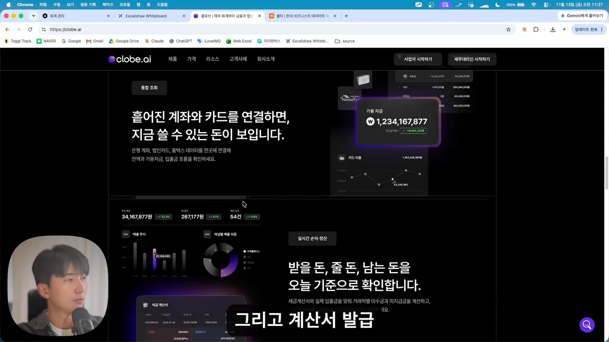
두 번째는 볼타예요. 홈페이지는 '한국 비즈니스의 데이터와 재무 인프라'라는 문구를 걸고 있고, 발표자는 세금계산서나 현금영수증을 더 가볍게 발행할 수 있는 API(Application Programming Interface)를 주는 서비스로 소개해요.
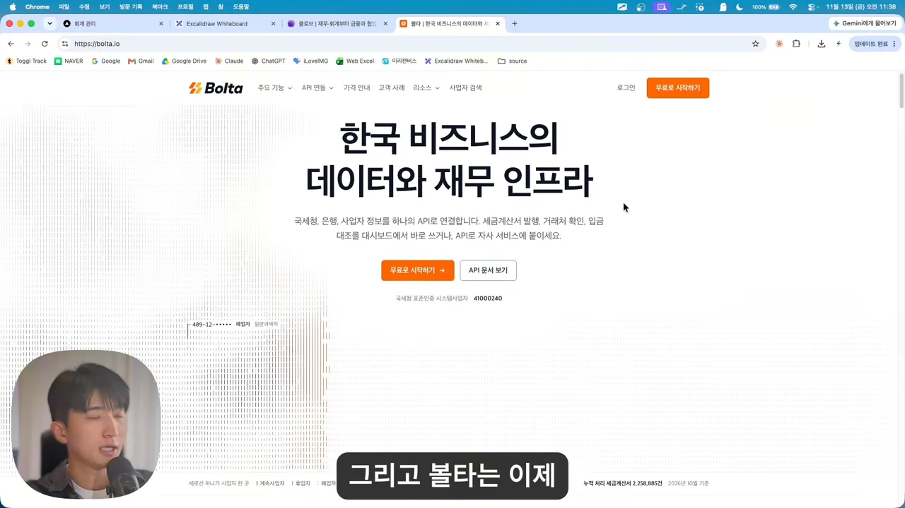
만드는 순서는 화이트보드에 쓴 대로 데이터 → 가공 → 맞춤 대시보드예요. 발표자가 짚은 핵심은 가운데 가공이에요. 우리 회사가 어떤 정보를 보고 싶은지 먼저 정하고, 데이터를 그 모양에 맞게 바꾸는 단계거든요. 영상 전체에서 나온 재료와 화면을 이 순서에 맞춰 한 장으로 모으면 아래와 같아요.
대표가 보는 월 결산 화면
첫 화면은 월 결산이에요. 회사마다 매달 얼마를 벌고 얼마를 써서 얼마가 남았는지 정리하잖아요. 그걸 한 화면에 보여 줘요. 위쪽 숫자 카드 네 장을 보면 2026년 10월(예시 데이터) 기준으로 이렇게 나와요.
| 카드 | 화면 숫자 | 무엇을 뜻하나요 |
|---|---|---|
| 매출 (공급가액) | 217,581,000원 | 이번 달 번 돈 |
| 비용 (공급가액) | 182,088,000원 | 이번 달 쓴 돈 |
| 잠정 손익 | 34,259,726원 | 아직 마감 전이라 확정되지 않은 이익 |
| 매출 미수 (10/31 기준) | 346,611,000원 | 계산서는 끊었는데 아직 못 받은 돈 |
발표자가 가장 중요하다고 꼽은 건 네 번째 카드예요. 대표들이 "우리 돈 못 받은 게 얼마야?"를 제일 자주 묻기 때문이에요. 말로는 '3억이 넘는 매출'이라고 했지만, 화면의 3억 4,661만 원은 매출 미수 금액이에요. 아래쪽 막대그래프는 매출 구성(가공 부품 45%, 판금·용접 25%, 자동화 설비 15% 등)과 비용 구성(원자재·부품 39%, 인건비 21%, 외주 가공 20% 등)이에요.
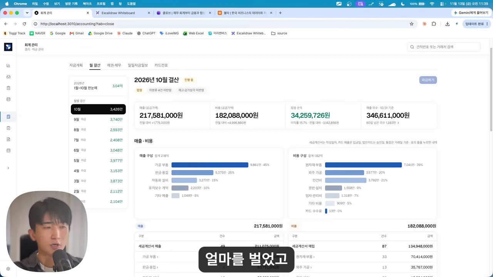
그래프만 보면 '가공 부품이 45%나 돼?' 싶을 수 있어요. 그래서 막대를 누르면 근거가 된 세금계산서 목록이 떠요. 아래 창은 10월 가공 부품 5건, 합계 9,860만 7천 원이에요. 첫 줄이 10월 1일 미래패키징 베어링 하우징 외 2,947만 4천 원, 넷째 줄이 10월 2일 제일물류 플랜지 가공품 1,600만 6천 원이에요.
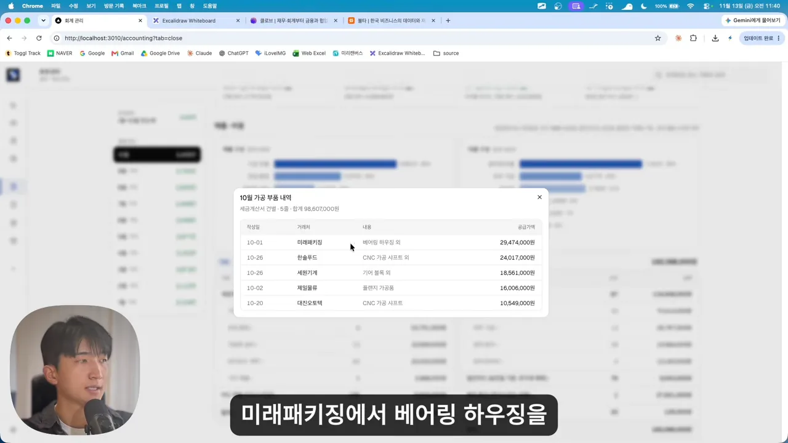
비용 쪽도 세금계산서 매입뿐 아니라 법인카드 사용, 급여처럼 통장에서 바로 나간 돈까지 함께 묶여 있어요. 그 아래 통장 수지 표는 여러 통장의 월초 잔액, 입금, 출금, 월말 잔액을 한 줄씩 보여 줘요. 예시는 신한·국민·기업·하나 4개 계좌이고, 전체로는 월초 6억 4,524만 원이 월말 6억 5,191만 원이 됐어요. 바로 밑에는 받을 돈(매출 미수)을 작성일부터 지난 날짜별로 나눈 표가 이어져요.
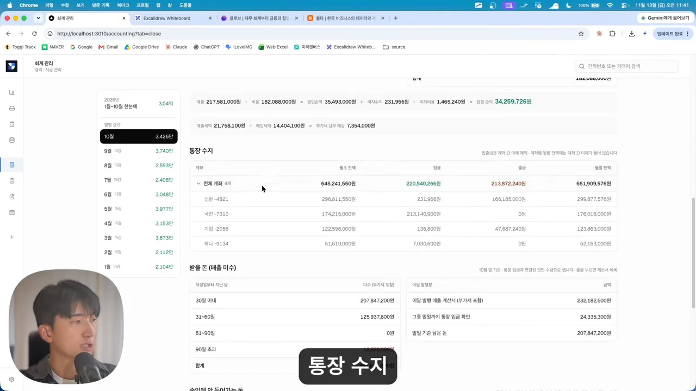
못 받은 돈과 AI 분류 검토
미수금은 따로 볼 수 있어요. 기준은 세금계산서 작성일이에요. 계산서를 발행했다는 건 그때부터 돈을 받기를 기대한다는 뜻이라, 발행일 이후 통장에 입금이 확인되지 않으면 자동으로 미수로 잡혀요. 대기업처럼 발행 후 며칠 뒤에 입금하는 조건이 붙는 경우도 가끔 있지만, 보통은 이 기준이면 돼요.
아래 창은 '30일 이내' 칸을 누른 모습이에요. 37건, 남은 미수 2억 784만 원이고, 오래된 계산서부터 정렬돼요. 맨 위 미래패키징 건은 10월 1일에 작성해서 30일이 지났고, 3,242만 1,400원이 그대로 남아 있어요.
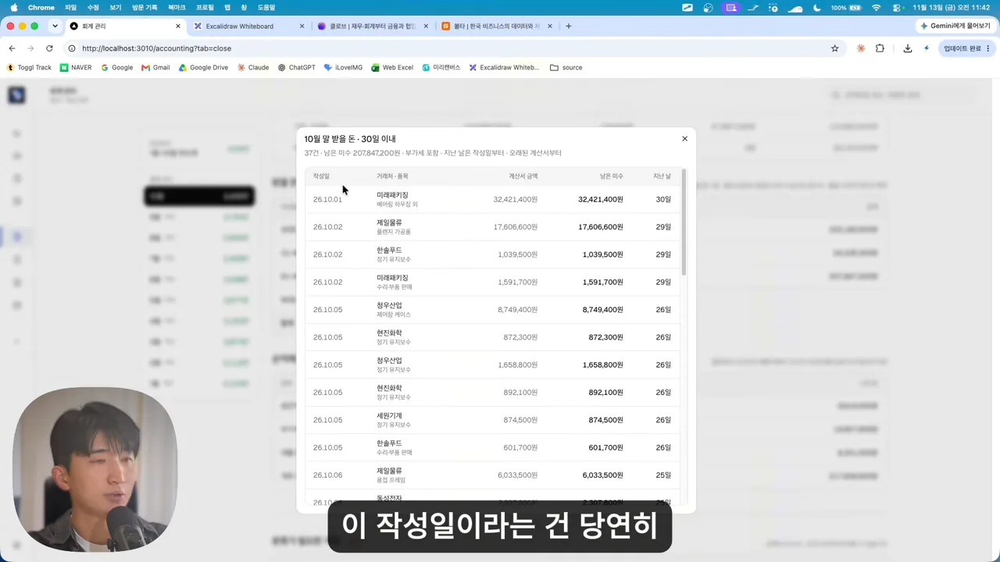
AI가 헷갈리는 거래는 사람이 골라요
AI가 데이터를 가져와 처음부터 100% 정확하게 분류하지는 못해요. 그래서 헷갈리거나 기존 분류에 들어가지 않는 거래는 '분류가 필요한 거래'로 모아 사람이 검토해요. 화면 맨 아래 표의 두 번째 줄이 발표자가 고른 예시예요. 10월 17일 신한 통장에서 (주)스마트팩토리랩으로 시제품 검사 명목의 128만 원이 나갔는데, 외주 가공인지 기타 비용인지 애매했던 거예요.
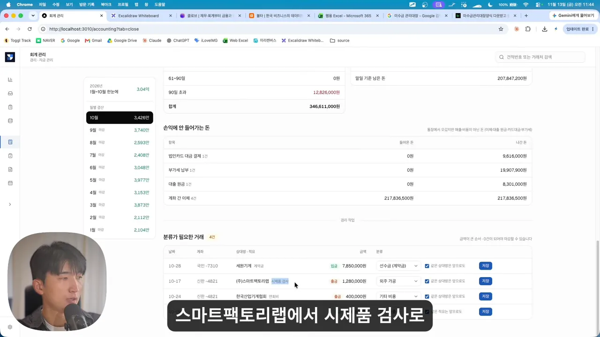
입금도 같은 방식이에요. 발표자는 이걸 '로직을 하나하나 쌓아 가는 일'이라고 불러요. 한 번 고른 결정이 다음 달부터는 사람 손을 거치지 않게 되는 흐름이에요.
flowchart TB
A["새 거래가 들어와요"] --> B{"AI가 분류할 수 있나요?"}
B -- "예" --> C["자동 분류"]
B -- "헷갈려요" --> D["분류가 필요한 거래"]
D --> E["사람이 분류를 골라요"]
E --> F["'같은 상대방은 앞으로도' 저장"]
F -. "다음 거래부터" .-> C
핵심은 AI가 아니라 경영 성과예요
여기서 발표자는 화이트보드에 늘 하는 말을 적어요. 핵심은 AI도 자동화도 아니고 경영 성과 개선이라는 거예요. 매출 증진, 비용 감소, 이익 증대. 작업을 했는데 이 세 가지로 이어지지 않는다면, AI로 풀 문제를 잘못 짚은 거니 하지 말라고 해요.
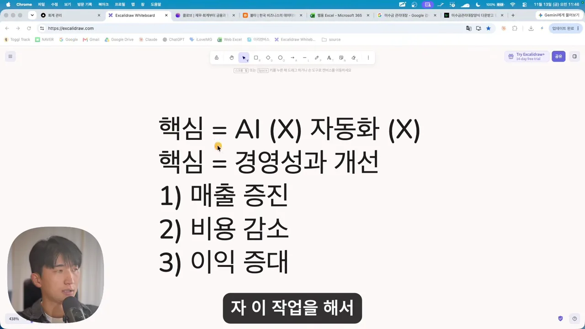
그런데 많은 회사가 현재 상황을 모르거나 애매하게만 알아요. 알려면 직원에게 물어 마감 자료를 기다려야 하고, 3주가 지나서야 받는 일도 흔하다고 해요. 대시보드로 상황이 바로 보이면 과한 비용이 어디인지, 매출 타깃이 어디인지 찾을 수 있어요. 이 작업에 쓰던 비용·에너지·시간도 줄어서, 그 시간을 영업 전환이나 고객 조사처럼 매출을 늘리는 일에 쓸 수 있어요.
경리 실무: 자금일보에서 위하고 전표까지
두 번째는 실무 쪽이에요. 아버지 회사 경리 직원이 실제로 하던 일인데, 매일 일일 자금일보를 써요. 회사의 모든 통장에서 돈이 얼마나 나가고 들어왔는지 기록하는 단순한 작업이고, 보통 엑셀 양식으로 관리해요. 아래는 발표자가 예로 띄운 자금일보 양식이에요. 전일 잔액, 입금, 출금, 금일 잔액과 그날의 입금·출금 내역을 칸마다 채우게 돼 있어요.
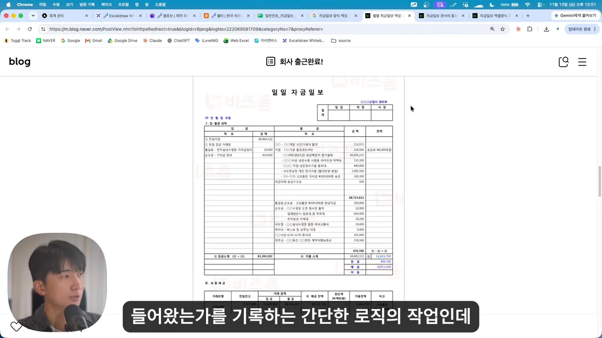
더 귀찮은 건 그다음이에요. 세무사 사무실이 다 해 주지 않는다면, 이 자금일보를 회계 장부에 올려야 해요. 들어오고 나간 돈이 어떤 계정인지 하나씩 분류해서 위하고에 전표로 입력하는 거죠. 발표자가 만든 화면에서는 이 과정이 네 단계로 줄어요.
- 일일 자금일보 엑셀을 올려요 — 은행별 입출금이 정리된 파일이에요. 올린 파일이 화면 아래에 표로 미리 보여요
- '전표 생성하기'를 눌러요 — 입금과 출금을 나누고 계정과목까지 붙여 줘요.
- 계정과목을 확인하고 고쳐요 — 펼침 메뉴로 얼마든지 바꿀 수 있어요.
- 엑셀로 내려받아 위하고에 올려요 — 위하고의 엑셀 업로드 기능을 써요.
1단계 화면이에요. 올린 파일은 2026년 10월 30일 자금일보이고, 노란 동그라미 친 부분이 신한·국민·기업·하나 4개 법인 통장이에요. 계좌마다 전일 잔액, 입금, 출금, 금일 잔액이 있고, 아래에 입금 내역과 출금 내역이 이어져요. 맨 아래 파란 '전표 생성하기' 버튼이 2단계예요.
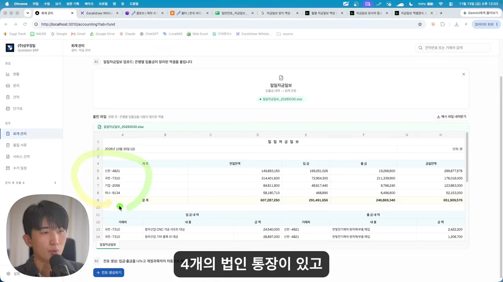
버튼을 누른 뒤의 모습이에요. 10월 30일 입금 18건, 출금 14건이 줄마다 은행, 적요, 계정과목, 금액으로 나뉘어요. 입금 쪽은 청우산업 CNC(Computer Numerical Control) 가공 샤프트 대금 2,454만 원처럼 대부분 '외상매출금'으로 분류됐고, 각 줄의 계정과목 칸은 펼침 메뉴라 직접 바꿀 수 있어요.
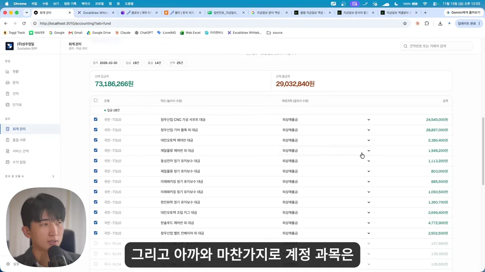
내려받은 파일은 위하고 업로드 양식에 맞춘 엑셀이에요. 한 거래가 차변 한 줄, 대변 한 줄로 나뉘어 있어요. 예를 들어 한빛전기제어 원자재·부품 매입 242만 2,200원은 차변 외상매입금, 대변 보통예금(신한-4821)으로 짝을 이뤄요. 아래쪽에는 예금 이자(이자수익), 시설자금 이자(이자비용), 시설자금 원금 상환(장기차입금)도 보여요.
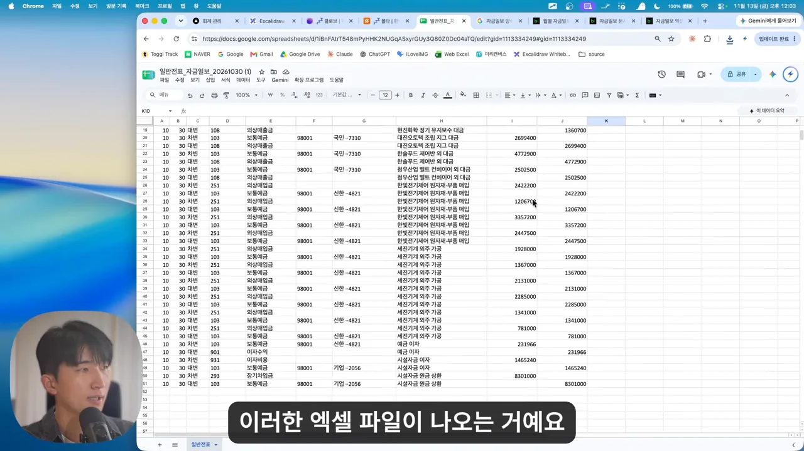
발표자는 한 단계 더 나가는 방법도 말해요. 자동 실행 도구와 연결하면 하루 동안의 입출금을 추적하고, 계정을 붙여 전표로 만들고, 위하고 업로드까지 모두 자동으로 할 수 있다고 해요. 영상에서는 이 부분을 말로만 소개하고 화면으로 보여 주지는 않아요.
오래 걸리는 건 회사 규칙이에요
정리하면, 회사 돈은 대표가 가장 궁금해하는 정보인데 보통 가장 늦게 아는 정보이기도 해요. 물어보면 하루 이틀 뒤에 답이 오고, 그마저 맞는지 의심하게 되죠. 못 받은 돈은 더 그래요.
발표자의 아버지는 이 시스템을 쓴 뒤로 경리 직원에게 묻는 일이 많이 줄었어요. 전체 금액을 계속 머리에 담아 둘 필요가 없어졌고, 대신 데이터를 보고 '이건 왜 이렇게 나왔지?' 같은 세부만 묻게 됐다고 해요.
마지막 화이트보드에는 만들면서 느낀 점을 한 줄로 적었어요. 왼쪽의 '연결, 제작'은 금방 끝나요. 밑줄 친 '우리 회사 규칙'은 끝이 없어요.
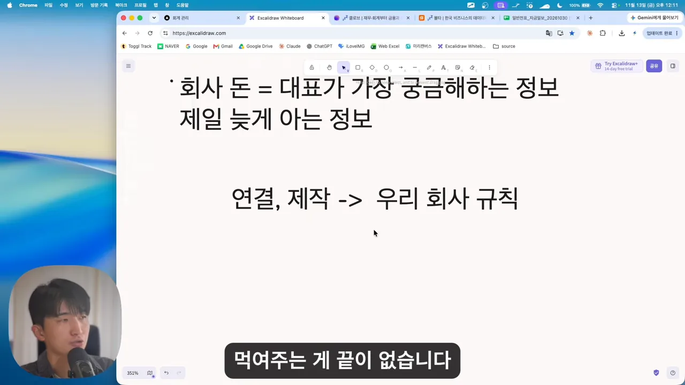
우리 회사 규칙을 먹여주는 게 이게 끝이 없습니다.
— 영상 09:22
앞에서 본 '분류가 필요한 거래'와 계정과목 수정이 바로 그 규칙을 쌓는 자리예요. 발표자는 어렵지 않으니 소개한 도구들을 직접 써 보면서 알 수 없던 자금 흐름 문제를 풀어 보라고 권해요.